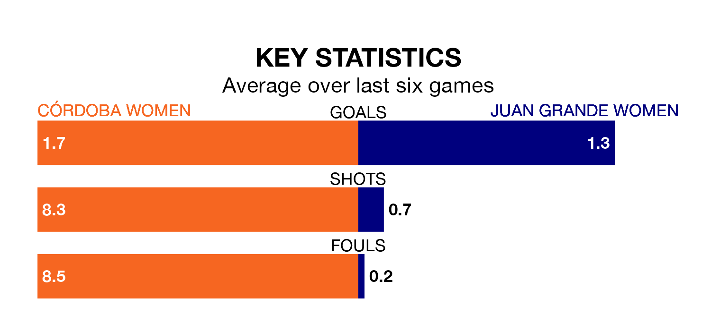

Córdoba Women host Juan Grande Women in Sunday's early match looking to bounce back from defeat last time out in the Segunda Federación Femenina.
Córdoba, who sit zero in the league after 29 games, fell to a 3-2 away defeat to Fundación Tenerife Women on April 28.
They face a Juan Grande side who picked up a win in their last match, a 2-0 victory against Cacereño II Women, and who sit ninth in the table.
Córdoba are in disappointing form in the Segunda Federación Femenina, with two wins and four losses from their last six games.
With three wins and two draws over that period, Juan Grande's form is better – they have taken 11 points from 18, compared to the hosts' six.
With 39 goals in 29 games so far this season, the away team are scoring at the league's average rate with 1.3 goals per game. And they are conceding fewer than average, letting in 23 goals at a rate of 0.8 per game.
Córdoba, meanwhile, are below average scorers, with 1.2 goals per game. They have conceded 1.4 goals per game.
Updated: 12:00 (UTC), 02/05/24